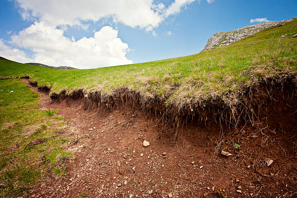
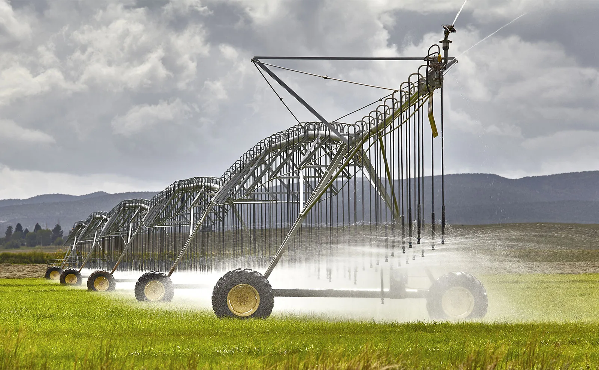
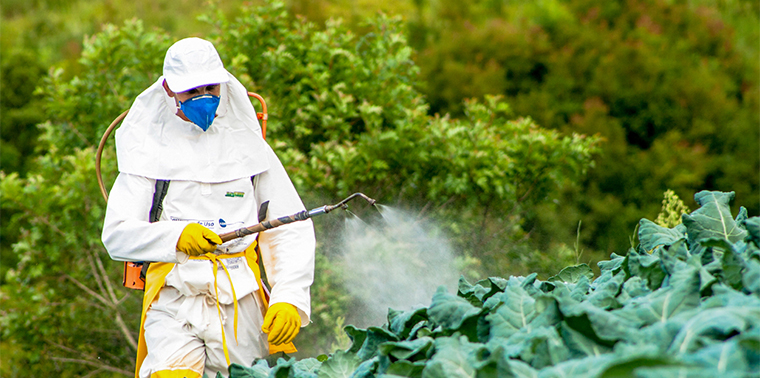
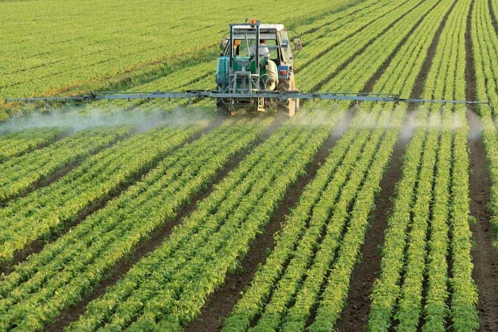

Effects of Modern Agriculture
Modern agriculture has ushered in a complex set of effects on our environment, economies, and societies. On the positive side, it has significantly increased food production through technological innovations, such as genetically modified crops and advanced farming techniques. This has helped meet the demands of a growing global population and boosted economic development by creating employment opportunities and contributing to national economies. However, the widespread use of chemical fertilizers, pesticides, and monoculture practices has led to environmental degradation. Soil erosion, water pollution, and the loss of biodiversity are among the adverse impacts, challenging the long-term sustainability of current agricultural practices. Moreover, the high water consumption associated with irrigation in modern agriculture contributes to water scarcity concerns in various regions. The reliance on fossil fuels for machinery and transportation, coupled with greenhouse gas emissions from livestock farming, adds to the sector's environmental footprint and its contribution to climate change. Efforts to address these challenges include the promotion of sustainable farming practices, the development of eco-friendly technologies, and a growing emphasis on agroecological approaches to balance the need for increased food production with environmental and social considerations.
-
Soil erosion
Soil erosion is a critical environmental issue characterized by the detachment and movement of the top layer of soil from its original location. This natural process is often exacerbated by human activities such as deforestation, improper land use, and intensive agricultural practices. The consequences of soil erosion are far-reaching, impacting both the environment and human societies. Eroded soil can lead to the degradation of arable land, diminishing its fertility and reducing its capacity to support plant growth. Moreover, the sediment runoff from soil erosion can compromise water quality in nearby rivers and lakes, affecting aquatic ecosystems and threatening the availability of clean water for human consumption. Efforts to combat soil erosion involve the implementation of erosion control measures, such as contour plowing, cover cropping, and the construction of physical barriers. Additionally, promoting sustainable land management practices and raising awareness about the importance of soil conservation are crucial steps toward mitigating the detrimental effects of soil erosion on our ecosystems and agricultural productivity.
-
Irrigation
Irrigation is a fundamental practice in agriculture that involves the artificial application of water to the soil to assist in the growth of crops. This technique plays a pivotal role in enhancing agricultural productivity, particularly in regions where natural rainfall is insufficient or unpredictable. By providing a controlled and consistent water supply to crops, irrigation ensures optimal conditions for plant growth, helping to mitigate the risks associated with drought and water scarcity. Various irrigation methods, such as drip irrigation, sprinkler systems, and flood irrigation, cater to diverse agricultural needs and environmental considerations. While irrigation significantly contributes to increased crop yields and food security, it also presents challenges such as water wastage, soil salinity, and environmental impacts. Sustainable irrigation practices, coupled with water-efficient technologies, are crucial for balancing the benefits of irrigation with the imperative to conserve water resources and maintain the long-term health of ecosystems. Overall, irrigation stands as a vital tool in global agriculture, addressing the complexities of water availability and contributing to the stability of food production systems.
-
Agriculture and the loss of genetic diversity
Modern agriculture practices have had a profound impact on the loss of genetic diversity within plant and animal species. The shift towards large-scale, industrial farming has often favored the cultivation of a limited number of high-yield crop varieties and breeds, concentrating on those that meet specific market demands. This focus on monoculture and the reliance on a few select genetic strains for mass production can lead to a significant reduction in the genetic diversity of crops and livestock. The consequences of this loss of genetic diversity are multifaceted. First, it makes agricultural systems more vulnerable to pests, diseases, and environmental stresses. A lack of genetic variation means that if a particular strain is susceptible to a new pest or disease, the entire crop may be at risk. In contrast, a diverse gene pool would provide a better chance of some plants or animals possessing natural resistance. Second, the diminished genetic diversity in agriculture threatens food security by limiting the ability to adapt to changing environmental conditions, such as shifts in climate patterns. Climate change, with its unpredictable weather events and altered growing conditions, underscores the importance of maintaining a diverse pool of genetic resources that can help crops and livestock adapt to new challenges. Efforts to address the loss of genetic diversity include the establishment of seed banks, conservation programs, and initiatives promoting the use of traditional and locally adapted varieties. Embracing agroecological approaches, which encourage diverse farming systems and the preservation of traditional crop varieties, can contribute to maintaining genetic diversity and building more resilient and sustainable agricultural practices. In recognizing the importance of preserving genetic resources, there is an opportunity to foster agricultural systems that are not only productive but also robust and adaptable in the face of future uncertainties.
-
Fertilizer-pesticide problems
The use of fertilizers and pesticides in agriculture, while instrumental in boosting crop yields and controlling pests, has given rise to a range of environmental and health challenges. Excessive application of chemical fertilizers contributes to soil degradation and environmental pollution, as runoff carries these nutrients into water bodies, causing issues like eutrophication. The indiscriminate use of pesticides poses threats to non-target organisms, disrupting ecosystems and diminishing biodiversity. Furthermore, the development of pesticide resistance in target pests and the unintended harm to beneficial insects are growing concerns. The impact extends to human health, with farmworkers and nearby communities facing potential exposure to pesticide residues, leading to various health risks. Additionally, the economic burden of continually purchasing and applying these inputs can strain the finances of farmers. Addressing fertilizer-pesticide problems requires a shift towards sustainable agricultural practices, emphasizing integrated pest management, precision agriculture, and organic farming. Striking a balance between optimizing agricultural productivity and mitigating the adverse effects of agrochemicals is essential for the long-term health of ecosystems and human well-being.